CRVI000125Yusaku Kamekura - Expo '70
Japan World Exposition, Osaka · 'Progress and Harmony for Mankind' · 1970
Japan World Exposition, Osaka · 'Progress and Harmony for Mankind' · 1970

CRVI000121Tadanori Yokoo - Word & Image
The Museum of Modern Art, New York, January 24 – March 10 · 1968
The Museum of Modern Art, New York, January 24 – March 10 · 1968

CRVI000116Tadanori Yokoo - Made in Japan, Tadanori Yokoo, Having Reached a Climax at the Age of 29, I Was Dead
Self-portrait poster · 1965
Self-portrait poster · 1965

CRVI000137Shigeo Fukuda - [Poster: ring of figures on dark red]
Title not established
Title not established

CRVI000136Shigeo Fukuda - [Poster: figure walking off a curling sheet of paper]
Title not established
Title not established

CRVI000149Shigeo Fukuda - The Marriage of Figaro - Teatr Narodowy Warsaw
Designed by Shigeo Fukuda
Designed by Shigeo Fukuda

CRVI000122Shigeo Fukuda - [Poster: figure walking through a red spiral, LOOK series]
Title not established
Title not established

CRVI000138Shigeo Fukuda - [Poster: red arches with figures]
Title not established
Title not established

CRVI000184Designer unknown - Швейныя машины Компаніи Зингеръ — Singer Company Sewing Machines
Russian Singer emblem · advertising poster
Russian Singer emblem · advertising poster

CRVI000132Tadanori Yokoo - The 5th International Biennial Exhibition of Prints in Tokyo
The National Museum of Modern Art, Tokyo · 11.2–12.15 · 1966
The National Museum of Modern Art, Tokyo · 11.2–12.15 · 1966

CRVI000159Kazumasa Nagai - JIDA 30th Anniversary Program
Designed by Kazumasa Nagai · 1982
Designed by Kazumasa Nagai · 1982

CRVI000115Yusaku Kamekura - Tokyo 1964 — Starting Line
Official poster, Games of the XVIII Olympiad · photograph Osamu Hayasaki · 1964
Official poster, Games of the XVIII Olympiad · photograph Osamu Hayasaki · 1964

CRVI000142Shin Matsunaga - [Poster: PLAY, black discs and an orange form]
Title not established
Title not established
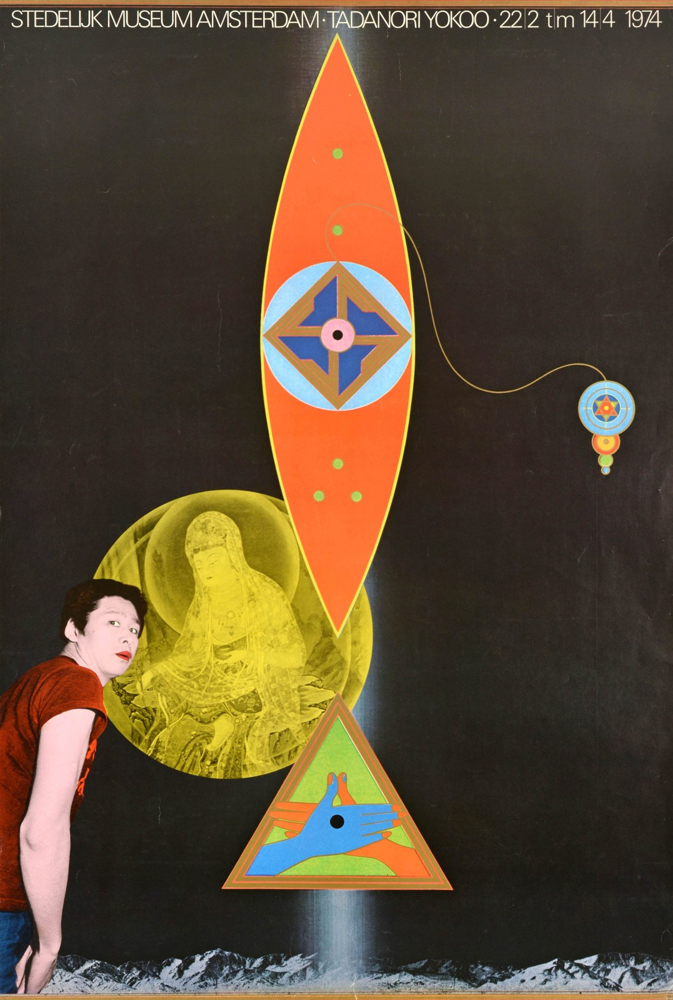
CRVI000120Tadanori Yokoo - Tadanori Yokoo — Stedelijk Museum Amsterdam
Exhibition poster, 22.2 t/m 14.4 1974 · 1974
Exhibition poster, 22.2 t/m 14.4 1974 · 1974

CRVI000141Shin Matsunaga - Shiseido Sun Oil
Offset lithograph · 1971
Offset lithograph · 1971

CRVI000139Jutaro Itoh - Hiroshima (orange)
廣島
廣島
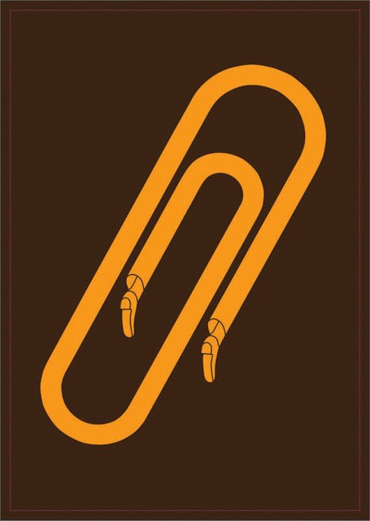
CRVI000131Shigeo Fukuda - [Poster: paperclip with legs]
Title not established
Title not established
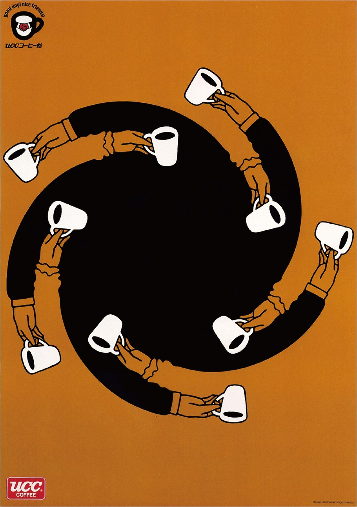
CRVI000135Shigeo Fukuda - UCC Coffee
Advertising
Advertising

CRVI000107Masuteru Aoba - The Bread Is For Peace
戦争に使うパンはない · anti-war poster · carries an Arthur Koestler passage in twelve languages · c1975
戦争に使うパンはない · anti-war poster · carries an Arthur Koestler passage in twelve languages · c1975
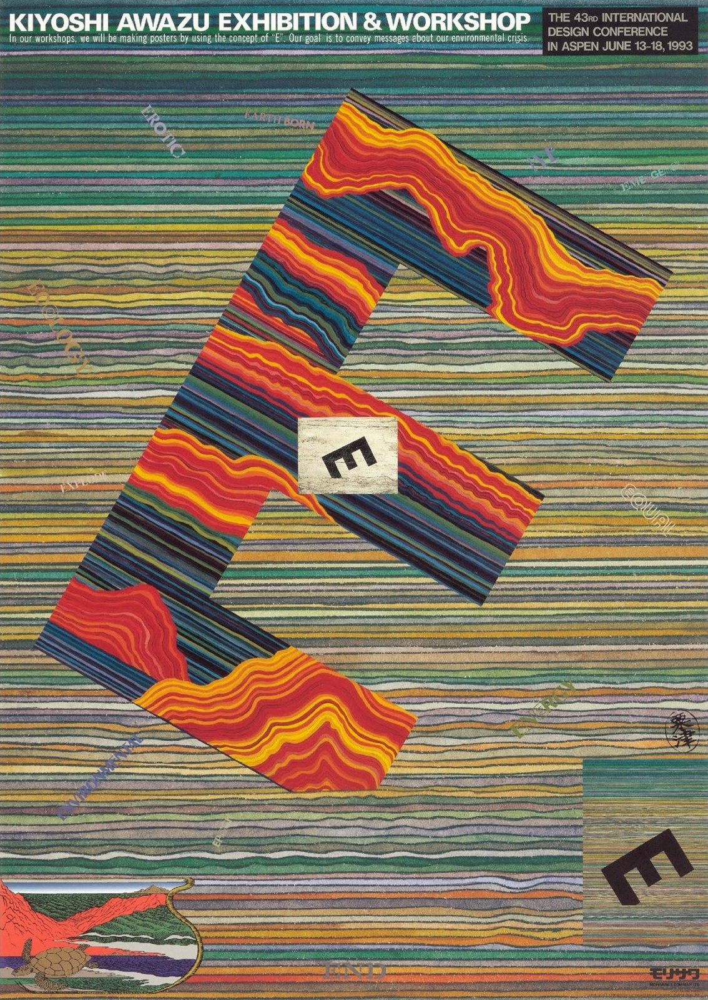
CRVI000112Kiyoshi Awazu - Kiyoshi Awazu Exhibition & Workshop
The 43rd International Design Conference in Aspen · 1993
The 43rd International Design Conference in Aspen · 1993

CRVI000111Kiyoshi Awazu - Contemporary Japanese Sculpture Exhibition — Form and Color
現代日本彫刻展 形と色 · 1973
現代日本彫刻展 形と色 · 1973
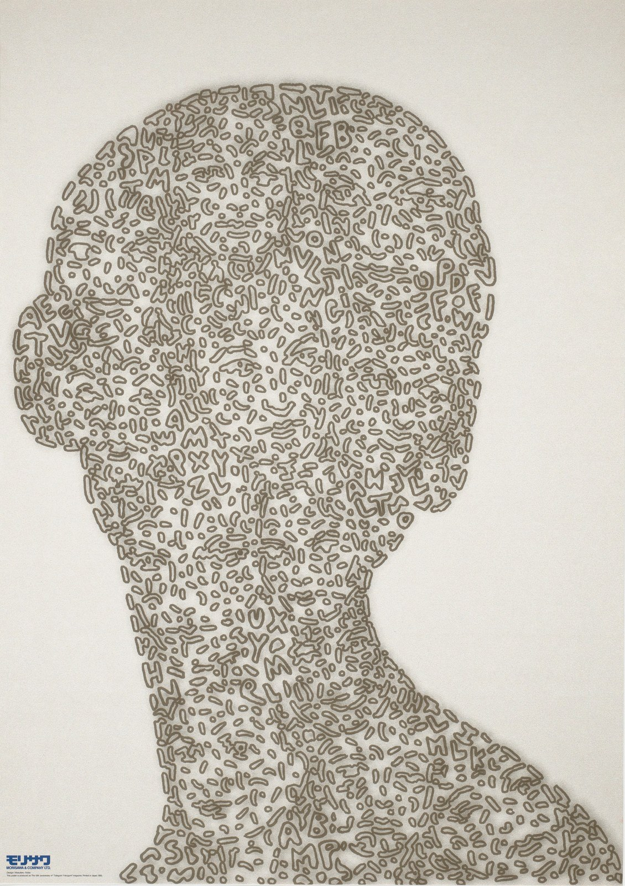
CRVI000105Masuteru Aoba - 10th Anniversary of "Tategumi Yokogumi" Magazine
Morisawa & Company Ltd. · Silkscreen · 1993
Morisawa & Company Ltd. · Silkscreen · 1993
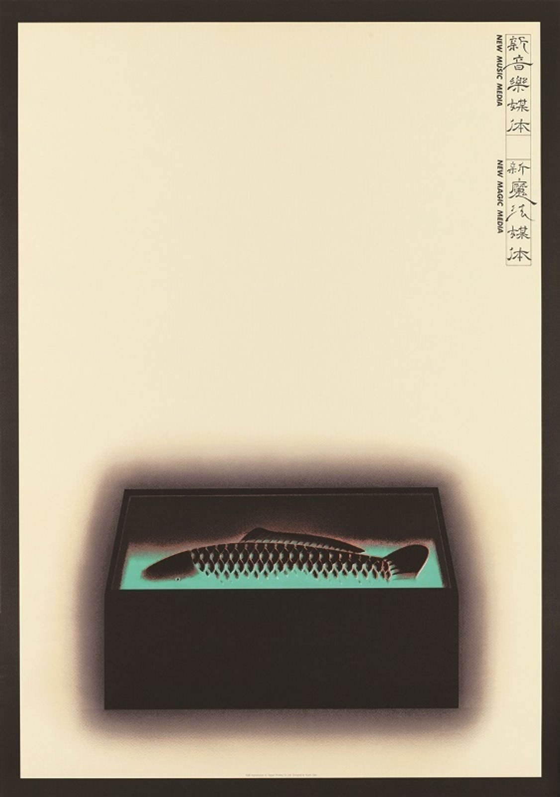
CRVI000130Koichi Sato - New Music Media, New Magic Media
1974
1974
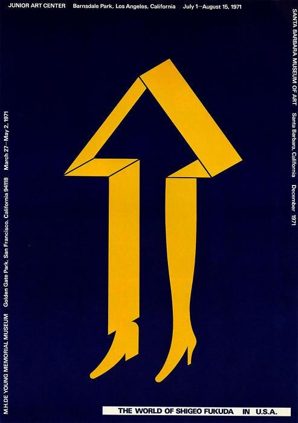
CRVI000126Shigeo Fukuda - The World of Shigeo Fukuda in U.S.A.
M.H. de Young Memorial Museum, San Francisco · Junior Art Center, Los Angeles · Santa Barbara Museum of Art · 1971
M.H. de Young Memorial Museum, San Francisco · Junior Art Center, Los Angeles · Santa Barbara Museum of Art · 1971

CRVI000123Shigeo Fukuda - Jazz Festival Montreux
19e Festival de Jazz Montreux, 5–20 juillet 1985 · 100 x 70 cm · 1985
19e Festival de Jazz Montreux, 5–20 juillet 1985 · 100 x 70 cm · 1985
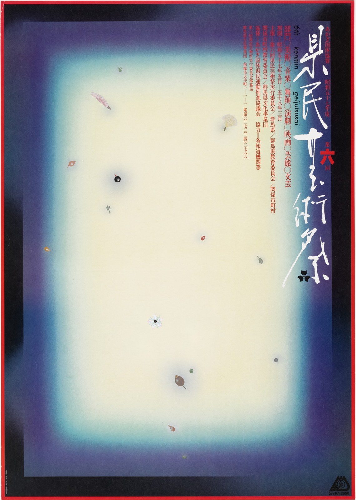
CRVI000128Koichi Sato - The 6th Iwaki Prefecture Art Festival
1982
1982
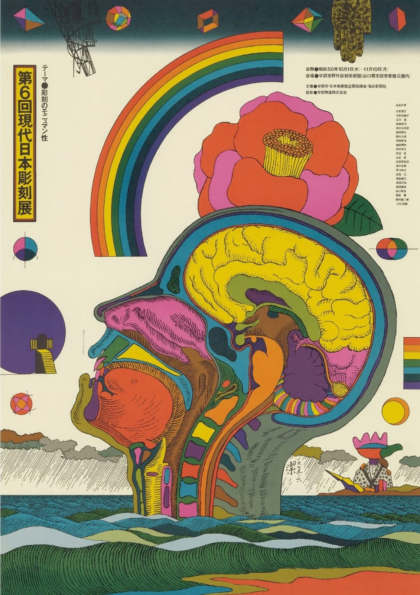
CRVI000110Kiyoshi Awazu - The 6th Contemporary Japanese Sculpture Exhibition
第6回現代日本彫刻展 · Ube City Open-Air Sculpture Museum, Tokiwa Park, Ube, Yamaguchi · 1975
第6回現代日本彫刻展 · Ube City Open-Air Sculpture Museum, Tokiwa Park, Ube, Yamaguchi · 1975

CRVI000117Tadanori Yokoo - Are You Ready for Foods?
Advertisement for a Chinese restaurant · 1989
Advertisement for a Chinese restaurant · 1989
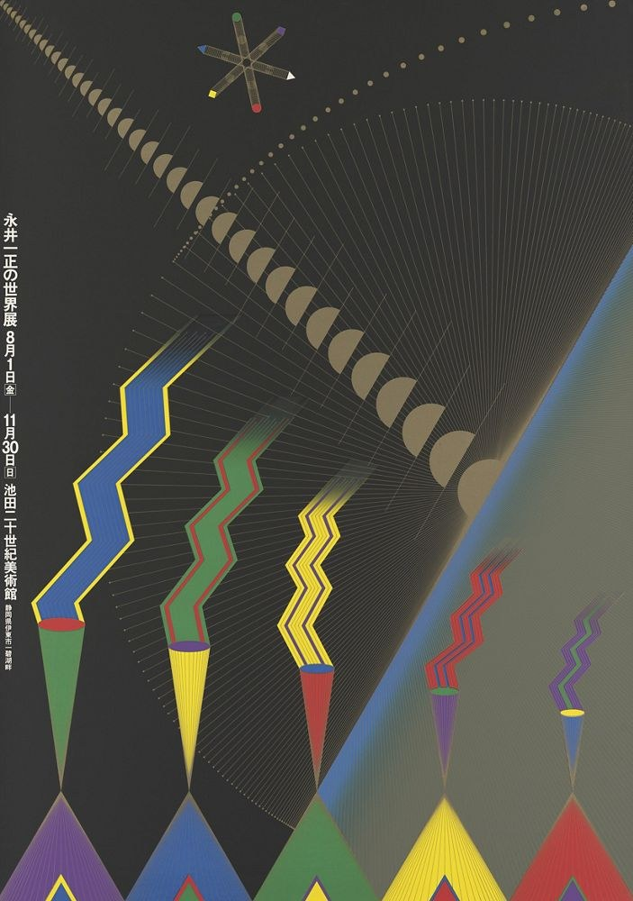
CRVI000162Kazumasa Nagai - The World of Kazumasa Nagai - Ikeda Museum of the 20th Century Art
Designed by Kazumasa Nagai · 1980
Designed by Kazumasa Nagai · 1980

CRVI000161Kazumasa Nagai - Peace
Designed by Kazumasa Nagai · 1989
Designed by Kazumasa Nagai · 1989

CRVI000109Katsumi Asaba - Bauhaus.
Misawa Design, bauhaus collection · after Lyonel Feininger's woodcut 'Cathedral', 1919 · 2009
Misawa Design, bauhaus collection · after Lyonel Feininger's woodcut 'Cathedral', 1919 · 2009
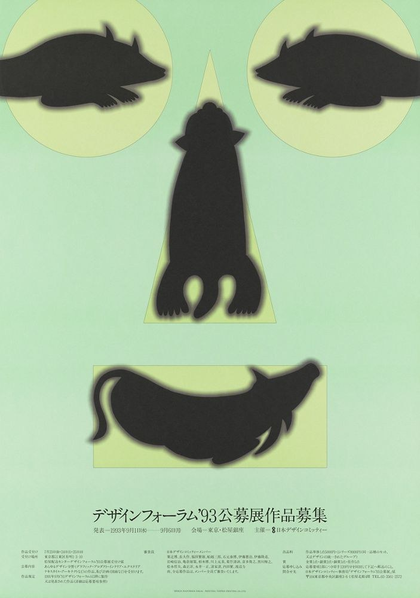
CRVI000156Kazumasa Nagai - Design Forum - Matsuya Ginza
Designed by Kazumasa Nagai · 1981
Designed by Kazumasa Nagai · 1981

CRVI000129Koichi Sato - Soap Bubbles Floated, They Floated Into Outer Space
Produced by Human Design · Fuji Television
Produced by Human Design · Fuji Television

CRVI000114Yusaku Kamekura - Tokyo 1964 — Butterfly Swimmer
Official poster, Games of the XVIII Olympiad · photograph Osamu Hayasaki · photo direction Jo Murakoshi · 1964
Official poster, Games of the XVIII Olympiad · photograph Osamu Hayasaki · photo direction Jo Murakoshi · 1964

CRVI000133Tadanori Yokoo - JUN ROPÉ
Fashion advertising
Fashion advertising
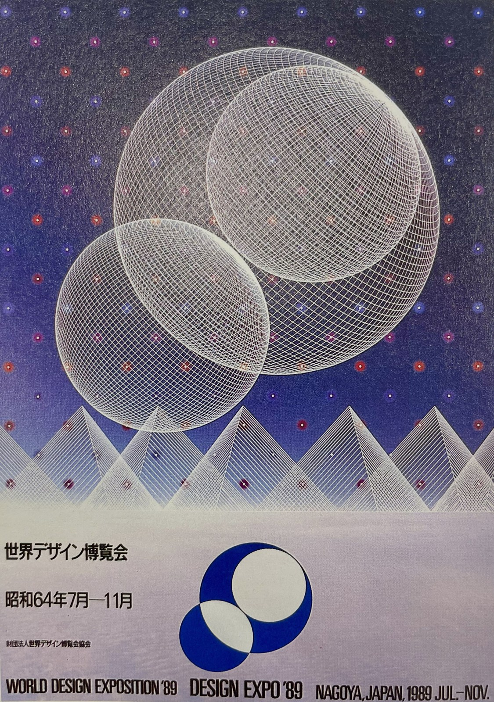
CRVI000163Kazumasa Nagai - World Design Expo '89 - Nagoya
Designed by Kazumasa Nagai · 1989
Designed by Kazumasa Nagai · 1989

CRVI000119Tadanori Yokoo - Koshimaki-Osen
腰巻お仙 · theatre poster for Kara Juro's Jokyo Gekijo (Situation Theatre) · silkscreen · 1966
腰巻お仙 · theatre poster for Kara Juro's Jokyo Gekijo (Situation Theatre) · silkscreen · 1966
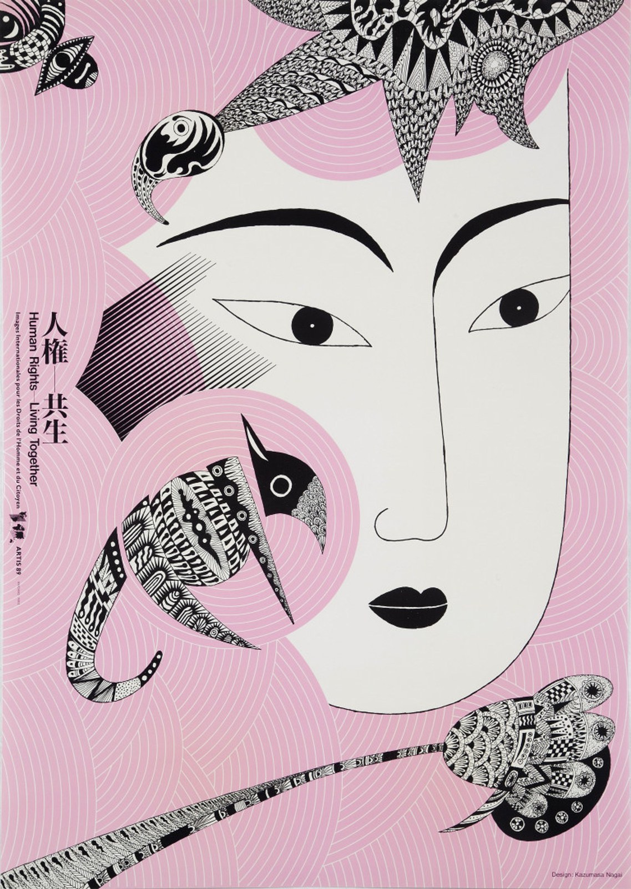
CRVI000158Kazumasa Nagai - Human Right - Living Together - Artis '89
Designed by Kazumasa Nagai · 1988
Designed by Kazumasa Nagai · 1988
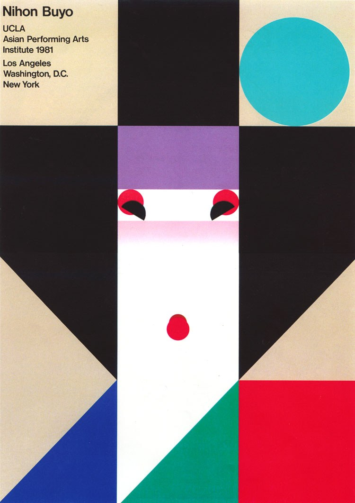
CRVI000124Ikko Tanaka - Nihon Buyo
UCLA Asian Performing Arts Institute · Los Angeles, Washington D.C., New York · 1981
UCLA Asian Performing Arts Institute · Los Angeles, Washington D.C., New York · 1981

CRVI000127Koichi Sato - Sakurahime Azuma Bunsho
桜姫東文章 · Shinjuku Kinokuniya Hall · 1976 Tomin Arts Festival · 1976
桜姫東文章 · Shinjuku Kinokuniya Hall · 1976 Tomin Arts Festival · 1976
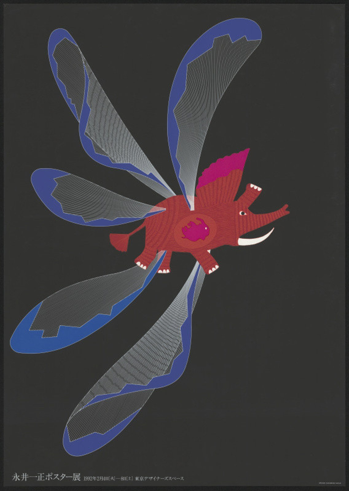
CRVI000160Kazumasa Nagai - Kazumasa Nagai Exhibition - Design Gallery
Designed by Kazumasa Nagai · 1991
Designed by Kazumasa Nagai · 1991

CRVI000118Tadanori Yokoo - Garuda
Offset lithograph · 1990
Offset lithograph · 1990

CRVI000157Kazumasa Nagai - Exhibition of Graphic Art
Designed by Kazumasa Nagai · 1978
Designed by Kazumasa Nagai · 1978
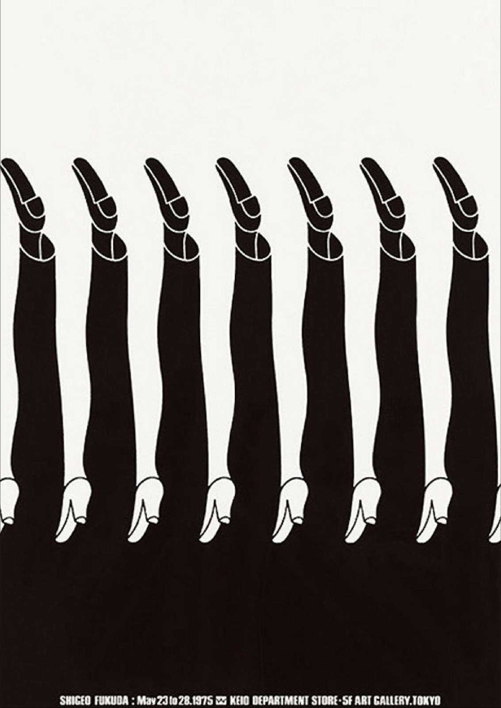
CRVI000134Shigeo Fukuda - Shigeo Fukuda
Exhibition, Keio Department Store SF Art Gallery, 23–28 May 1975 · 1975
Exhibition, Keio Department Store SF Art Gallery, 23–28 May 1975 · 1975
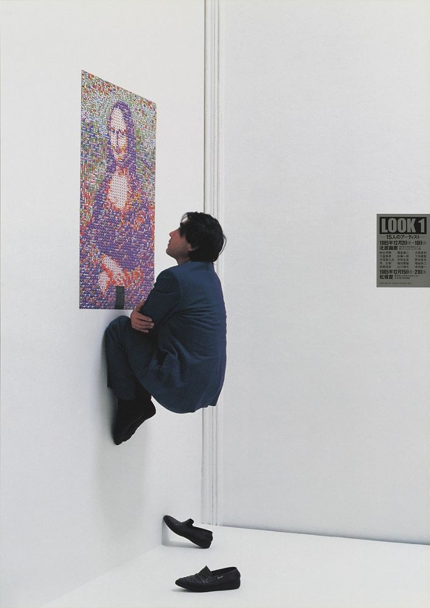
CRVI000181Shigeo Fukuda - Look 1
Exhibition · 103 x 73 cm offset · 1985
Exhibition · 103 x 73 cm offset · 1985
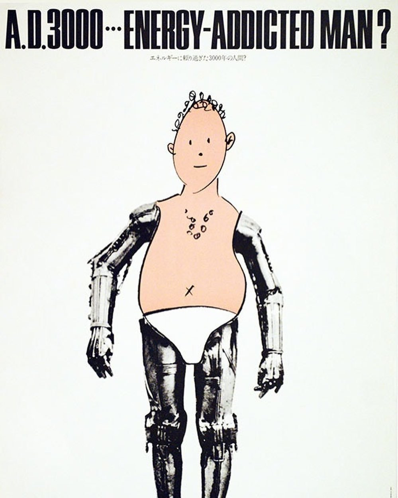
CRVI000108Masuteru Aoba - A.D. 3000 ⋯ Energy-Addicted Man?
エネルギーに頼り過ぎた3000年の人間？
エネルギーに頼り過ぎた3000年の人間？